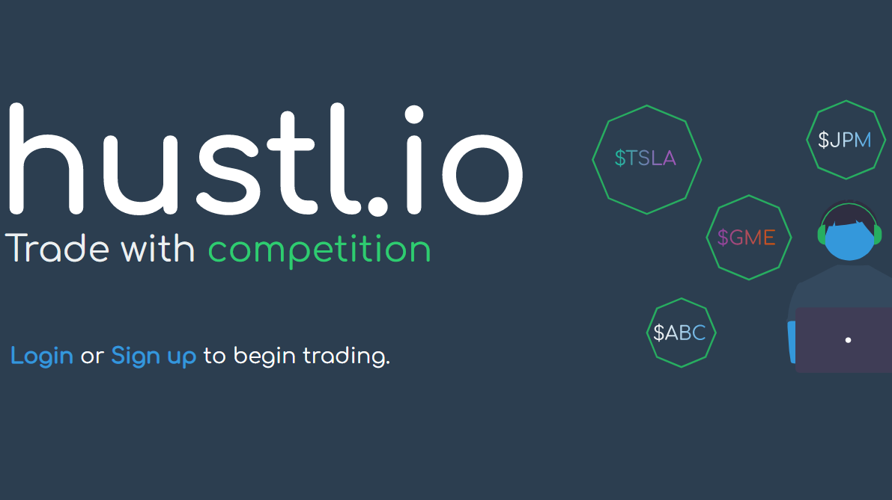

Introduction
My name is Louis Cullen, student of Computer Science at the University of Manchester. I'm a passionate, hardworking and cooperative student with an urge to find out about all areas of the field, particularly with an eye on the future and where technology can have the biggest impact. While there is no area which I can claim to be an expert in yet, I'm always eager to learn from courses and fellow computer scientists with 100% effort as I do so.

Education
University of Manchester
2021-present
I'm currently enrolled on MEng Computer Science in my second year. I passed first year with an 82% average, covering the basics of high and low level programming languages and the design of systems from CPU architecture right up to software development.

Therfield Sixth Form
2019-2021
I achieved GCE results of A* in Maths, Further Maths, Computer Science and Physics through my 2 years here, working independently much of the time and adapting to remote working during the pandemic.

Therfield School
2014-2019
I achieved nine grade 9s and a grade 8 in my GCSEs, covering a range of sciences, humanities and languages. It was during GCSE computer science that my determination to enter the field began.
Projects
hustl.io

Personal
Having worked as part of many teams, from sports clubs to supermarkets, I thrive when collaborating with others. While sometimes I like to be left to work on a task without interruption, I also appreciate the benefits of sharing ideas in a group to produce the best results possible. I am happy to step up to lead in positions where I'm comfortable with the project's aim, but I'm equally happy to follow others' lead when I have less experience.